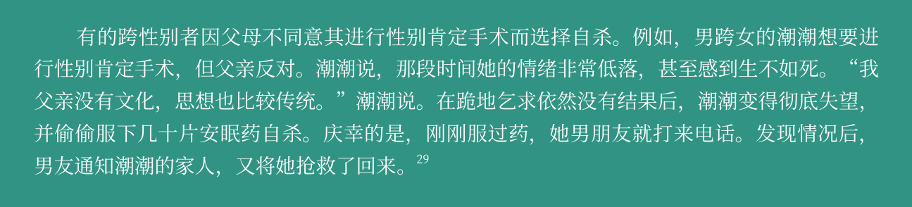
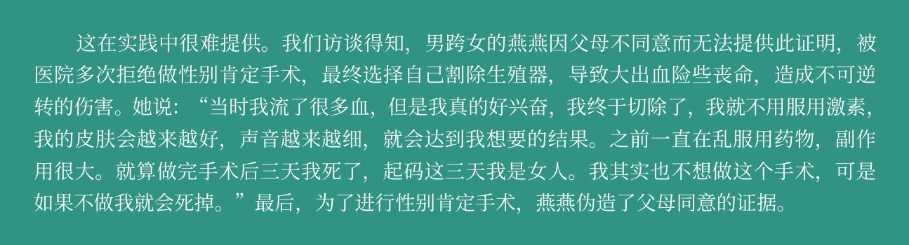

中国跨性别医疗评估报告
中国现行跨性别医疗制度仍以“病理化”认定为基础，并设置了大量程序性与社会性门槛，使跨性别者在获得性别肯定医疗与法律性别承认时面临严重障碍。
🧩1 对跨性别者的病态定性
-
中国仍将跨性别者归类为“易性症”，属于精神障碍范畴（CCMD-3）。
-
2009 年《变性手术技术管理规范》明确称跨性别者为“易性癖病患者”。
-
虽然 2017 年新规将术语改为“性别重置技术”，不再使用“病人”字样，但病理化框架仍未改变。
-
与国际趋势（如 WHO 2018 年 ICD-11 去精神病化）明显脱节。
-
病理化导致：
-
医疗前置要求繁重
-
社会污名加深
-
法律性别承认必须以“疾病诊断 + 手术”作为前提
🧩2 申请性别肯定手术的条件
2022 年《性别重置技术管理规范》要求申请者必须提供：
必须提交的材料
-
公安机关出具的无犯罪记录证明
-
有三级医院精神科或心理科医师开具的易性症（性别焦虑，或性别不一致）诊断证明。
-
本人书面申请并公证（同时面临公证处工作人员质疑）
-
已告知直系亲属的证明（实际等同于“家属同意”）
必须满足的条件
-
至少 5 年以上持续的性别转换意愿
-
未婚
-
年龄 > 18岁（中国成年标准）
-
无手术禁忌症
现实影响
这些条件造成极大障碍，例如：
-
家庭不同意 → 无法手术 → 有人因此自杀（真实案例）
-
性工作者因无法提供无犯罪记录 → 无法手术
-
未婚要求导致已婚跨性别者必须先离婚
-
年龄限制排除大量迫切需要医疗支持的未成年人

🧩 3 性别重置手术的医疗资质
- 实际上，中国能做手术的医院数量极少，且收费高昂。
🧩 4 医护规范缺失
-
虽然对医院资质有要求，但缺乏跨性别医疗的专业护理标准。
-
医生对跨性别议题缺乏培训，导致：
-
误诊
-
强制“矫正”
-
不当心理干预
-
医疗歧视
🧩 5 医疗费用承担
-
性别肯定手术与激素治疗不在医保范围内（除了补佳乐）。
-
手术费用高昂。
-
经济压力迫使许多跨性别者：
-
放弃手术
-
选择海外手术
-
使用非正规渠道自切黑切（风险极高）

⚠核心问题： 中国跨性别医疗体系仍以“病理化 + 高门槛 + 家庭控制 + 高成本”构成的制度结构为基础。
这导致：
-
医疗可及性极低
-
法律性别承认被“手术前置”绑死
-
家庭与社会压力被制度化
-
医疗风险被迫外溢（自残自杀、海外手术、黑市手术）